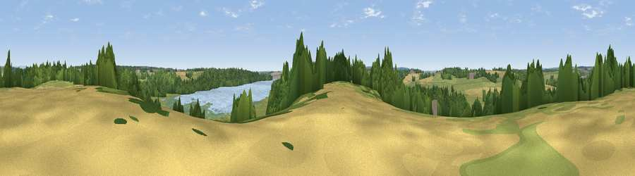

Viewpoint near Newton
#43225 in England · top 89% of its area beats it · near Newton · access?Where it is
The exact computed spot (SK 05225 25725). Click the marker for map links.
Public access: no public right of way or access land is recorded at this exact spot — it may be on private land. Computed from Natural England's CRoW access layer and OpenStreetMap rights of way — not the legal definitive map. Always verify locally.
The view, rendered

A 360° render of this exact spot computed from the terrain model, tree cover and land cover — summer colours, afternoon light, calibrated against photographs of famous viewpoints. Real trees, hedges and buildings will differ in detail.
The panorama
Grey silhouette: terrain skyline in each direction (720 bearings, Earth curvature and refraction included). Dashed green: skyline with trees (+15 m) and buildings (+8 m) as obstacles. Blue strip: how far the ground is visible on each bearing.
Where the view opens
Wedge length = distance to the farthest visible ground on that bearing (vegetation-aware). Rings at 10, 25 and 50 km.
What fills the view
46% grassland · 27% woodland · 13% cropland · 8% water · 5% wetland · 1% built-up
Angular shares of the visible panorama (visual magnitude), not map area. Landscape diversity 0.59 (0–1 Shannon).
Key numbers
More beautiful places nearby
The staircase of upgrades: each row has a higher view potential than everything closer. Driving times are estimates from straight-line distance, calibrated against real road routing — check an actual route before setting out.
| Place | Direction | Drive | Score |
|---|---|---|---|
| Viewpoint near Newton | S · 0 km | ~1 min | 23.0 |
| Bagot's Park | ENE · 5 km | ~10 min | 27.5 |
| Viewpoint near Hixon | W · 5 km | ~11 min | 34.8 |
| Viewpoint near Marchington Woodlands | ENE · 6 km | ~13 min | 50.6 |
| Viewpoint near Bishton | SSW · 7 km | ~14 min | 51.7 |
| Viewpoint near Marchington | ENE · 9 km | ~18 min | 52.0 |
| Viewpoint near Upper Longdon | S · 11 km | ~21 min | 55.9 |
| Wimblebury Hill | S · 15 km | ~26 min | 60.9 |
52.82903, -1.92389 · source: screening · position refined by local search. Computed location — check access rights before visiting.